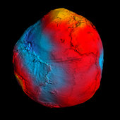

A terra possui um campo de magnetico de origem externa, originado pelo fluxo de correntes elétricas numa região da atmosfera conhecida como ionosfera, localizada a mais de 60 Km de altura. Tal campovaria de forma relativamente rápida, geralmente de segundos a dias. Estas variações temporais, de acordo com a lei de Faraday, causam o aparecimento de correntes elétricas no interior da Terra, que por sua vez geram campos elétricos (denominado "telúricos"). O campo magnético terrestre funciona como uma espécie de escudo que envolve o nosso planeta e oferece proteção contra a radiação cósmica e a ação das tempestades solares. Porém, nós humanos não conseguimos senti-lo deferente do campo gravitacional da Terra.
Uma curiosidade relacionado ao campo magnético da Terra é que micro-organismos vivos podem fazer parte do futuro da computação: são as chamadas bactérias magnéticas. Elas utilizam o campo magnético da Terra para se orientar e usam para tal cristais nanométricos que desempenham função semelhante à de ímãs comuns de magnetita. Essas bactérias, que são encontradas na natureza em diversas partes do mundo, preferem águas calmas e despertam bastante interesse de pesquisadores da área da biomedicina e também da computação. alguns cientistas estudou o funcionamento dessas bactérias, desenvolvendo um método para recriar o ímã natural delas fora do micro-organismo. Isso seria aplicado na criação de “biocomputadores”, mais rápidos do que os existentes hoje. Vale lembrar ainda que os ímãs existentes dentro das bactérias magnéticas são eternos, ou seja, nunca se desmagnetizam, outra grande vantagem para sua aplicação na biotecnologia.
A imagem acima apresenta uma projeção do campo magnético terrestre, mostrando como ele protege a Terra de tempestades solares. É possível observar os polos magnéticos terrestres.
A imagem acima exibe o campo magnético da Terra em ação, protegendo ela de ondas solares.
O campo gravitacional da Terra funciona como um segundo escudo, protegendo ela de objetivos fisícos como meteoroides e impedindo que qualquer coisa, sem exercer uma grande força, sai do planeta.
Uma curiosidade relacionado ao campo gravitacional é que permanecer em um ambiente sem gravidade por muito tempo pode ser extremamente prejudicial para o organismo. Nossos músculos se atrofiam, os ossos ficam mais frágeis e os nossos fluidos corporais e pressão arterial ficam completamente malucos. Afinal, o nosso corpo foi projetado para ficar aqui na Terra, ancorado pela força da gravidade.
A imagem acima mostra o campo gravitacional da Terra em ação contra meteoroides.
O novo mapa do campo gravidade da Terra, obtidos a partir de dados da missão GOCE (Gravity Field and Steady-state Ocean Circulation Explorer) e lançado pela Agência Espacial Européia (ESA), mostra que o campo gravitacional da Terra tem a forma aproximada de uma esfera, como nos ensinam os livros-textos escolares.
Medições precisas da aceleração de gravidade, ou da superfície de igual potencial gravitacional chamada geóide, mostram que em regiões como a islâncdia e Indonésia o geóide tem valores positivos e maior amplitude, enquanto que no sul da Índia, valores mais negativos.
Na figura, as cores vermelhas indicam desvios positivos e as azuis, desvios negativos em relação a uma referência definida por um Terra aproximadamente esféria e homogênea. Portanto, os desvios indicam que existem variações de massa no interior do planeta, que são úteis em diversas aplicações: geodinâmica, exploração de recursos naturais, estudos climáticos e oceanográficos.